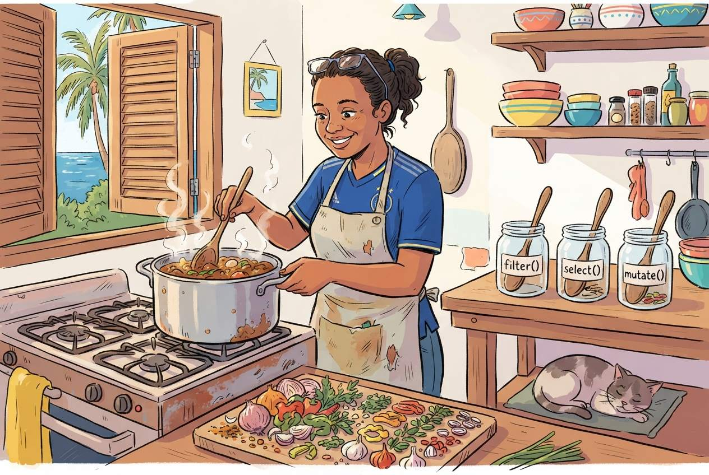

Data Manipulation
Last updated on 2026-08-28 | Edit this page
Estimated time: 90 minutes
Overview
Questions
- How do I filter, sort, and recode data in R the way I do in SPSS?
- What is the tidyverse and why does it matter?
- How do I create new variables from existing ones?
Objectives
- Filter rows, select columns, and sort data using dplyr
- Create new variables and recode existing ones
- Chain operations together using the pipe operator
- Recognize the SPSS menu equivalent for each operation

The tidyverse approach
In SPSS you manipulate data through menus: Data > Select
Cases, Data > Sort Cases, Transform
> Compute Variable, and so on. In R the dplyr
package gives you a set of verbs, functions with
plain-English names that do exactly what they say.
The dplyr package is part of the
tidyverse, which you already loaded in the previous
episode. If you are starting a fresh R session, load it now:
R
library(tidyverse)
OUTPUT
── Attaching core tidyverse packages ──────────────────────── tidyverse 2.0.0 ──
✔ dplyr 1.2.1 ✔ readr 2.2.0
✔ forcats 1.0.1 ✔ stringr 1.6.0
✔ ggplot2 4.0.3 ✔ tibble 3.3.1
✔ lubridate 1.9.5 ✔ tidyr 1.3.2
✔ purrr 1.2.2
── Conflicts ────────────────────────────────────────── tidyverse_conflicts() ──
✖ dplyr::filter() masks stats::filter()
✖ dplyr::lag() masks stats::lag()
ℹ Use the conflicted package (<http://conflicted.r-lib.org/>) to force all conflicts to become errorsR
# Also load our dataset
squad <- read_csv("data/blue_wave_squad.csv")
OUTPUT
Rows: 94 Columns: 5
── Column specification ────────────────────────────────────────────────────────
Delimiter: ","
chr (5): team_code, player_name, position, club, club_country
ℹ Use `spec()` to retrieve the full column specification for this data.
ℹ Specify the column types or set `show_col_types = FALSE` to quiet this message.What is a dependency?
A package in R is a bundle of code that someone else wrote so you do
not have to. tidyverse, for example, is a collection of
packages that work together for data manipulation and visualisation.
When you use library(tidyverse), R loads those packages
into your session so their functions become available.
A dependency is a package that another package needs in order to
work. tidyverse depends on dplyr,
ggplot2, readr, and several others. When you
run install.packages("tidyverse"), R automatically installs
everything it depends on too. You do not have to manage the chain
manually.
Two things this means in practice. First, the first time you install
a package it can take a minute or two because R is pulling down the
dependency chain. That is normal. Second, when you share your script
with a colleague and they get an error like
there is no package called 'dplyr', the fix is almost
always install.packages("tidyverse"), not
install.packages("dplyr"), because the dependency lives
inside the larger package.
We come back to this in Episode 6, reproducible reporting, where recording which packages your script needs is part of making sure it still runs six months from now.
Here is the key idea: every SPSS menu operation you use for data manipulation has a dplyr verb equivalent.
| SPSS menu path | dplyr verb | What it does |
|---|---|---|
| Data > Select Cases | filter() |
Keep rows that match a condition |
| (selecting columns in Variable View) | select() |
Keep or drop columns |
| Transform > Compute Variable | mutate() |
Create or modify a column |
| Transform > Recode into Different Variables | case_when() |
Assign values based on conditions |
| Data > Sort Cases | arrange() |
Sort rows |
| Data > Split File + Aggregate |
group_by() + summarise()
|
Calculate summaries by group |
Let us work through each one.
filter(), Select Cases
In SPSS you would go to Data > Select Cases, click “If condition is satisfied”, and type a condition. In R:
R
curacao_men <- filter(squad, team_code == "CUW-M")
curacao_men
OUTPUT
# A tibble: 26 × 5
team_code player_name position club club_country
<chr> <chr> <chr> <chr> <chr>
1 CUW-M Armando Obispo DEF PSV NLD
2 CUW-M Deveron Fonville DEF NEC NLD
3 CUW-M Joshua Brenet DEF Kayserispor TUR
4 CUW-M Juriën Gaari DEF Abha SAU
5 CUW-M Riechedly Bazoer DEF Konyaspor TUR
6 CUW-M Roshon van Eijma DEF A.E. Kifisia GRC
7 CUW-M Sherel Floranus DEF PEC Zwolle NLD
8 CUW-M Shurandy Sambo DEF Sparta Rotterdam NLD
9 CUW-M Brandley Kuwas FWD Volendam NLD
10 CUW-M Gervane Kastaneer FWD Terengganu MYS
# ℹ 16 more rowsNotice the double equals sign ==. This
is how R tests equality. A single = is for assigning values
to function arguments, like digits = 1. A double
== asks “is this equal to?”.
You can combine conditions. Listing them separated by commas means “and”:
R
# Curaçao men who play in the Netherlands
cuw_nld <- filter(squad, team_code == "CUW-M", club_country == "NLD")
cuw_nld
OUTPUT
# A tibble: 10 × 5
team_code player_name position club club_country
<chr> <chr> <chr> <chr> <chr>
1 CUW-M Armando Obispo DEF PSV NLD
2 CUW-M Deveron Fonville DEF NEC NLD
3 CUW-M Sherel Floranus DEF PEC Zwolle NLD
4 CUW-M Shurandy Sambo DEF Sparta Rotterdam NLD
5 CUW-M Brandley Kuwas FWD Volendam NLD
6 CUW-M Trevor Doornbusch GK VVV-Venlo NLD
7 CUW-M Tyrick Bodak GK Vitesse NLD
8 CUW-M Godfried Roemeratoe MID RKC Waalwijk NLD
9 CUW-M Juninho Bacuna MID Volendam NLD
10 CUW-M Kevin Felida MID Den Bosch NLD R
# Every player in the dataset based on one of the two islands
home_based <- filter(squad, club_country %in% c("CUW", "ABW"))
home_based
OUTPUT
# A tibble: 16 × 5
team_code player_name position club club_country
<chr> <chr> <chr> <chr> <chr>
1 ARU-M Diederick Luydens DEF Dakota ABW
2 ARU-M Nickenson Paul DEF Dakota ABW
3 ARU-M Josthan Maduro GK SV Britannia ABW
4 ARU-W Joyce Chen DEF SV Racing Club ABW
5 ARU-W Sofia Mora DEF SV Bubali ABW
6 ARU-W Zyana Rogers FWD SV Britannia ABW
7 ARU-W Dylana Veenstra GK SV Britannia ABW
8 ARU-W Jennifer Henao MID SV Britannia ABW
9 ARU-W Kim Schoppema MID SV Britannia ABW
10 CUW-W Charnainelys Andrea DEF Excellence CUW
11 CUW-W Ignarda Pieternella DEF Victory Boys CUW
12 CUW-W Ruwenna Cristina DEF UNDEBA CUW
13 CUW-W Gervionna Martina FWD Victory Boys CUW
14 CUW-W Kingnaichely Provence GK Jong Holland CUW
15 CUW-W Thiheyna Susana GK Undeba CUW
16 CUW-W Riesmarly Tokaay MID Victory Boys CUW That last result is worth a pause. Run it and look at which team codes appear.
Common comparison operators
| Operator | Meaning | Example |
|---|---|---|
== |
equal to | position == "GK" |
!= |
not equal to | club_country != "NLD" |
> |
greater than | year > 2020 |
< |
less than | age < 21 |
>= |
greater than or equal to | year >= 2021 |
<= |
less than or equal to | rank <= 100 |
%in% |
matches one of several values | position %in% c("DEF", "MID") |
! |
not | !is.na(club) |
select(), keep or drop columns
Sometimes your dataset has more columns than you need. In SPSS you
might delete variables or simply ignore them. In R,
select() lets you keep only the columns you want:
R
slim <- select(squad, team_code, player_name, position, club_country)
head(slim)
OUTPUT
# A tibble: 6 × 4
team_code player_name position club_country
<chr> <chr> <chr> <chr>
1 ARU-M Bradley Martis DEF NLD
2 ARU-M Darryl Bäly DEF NLD
3 ARU-M Diederick Luydens DEF ABW
4 ARU-M Gladwin Curiel DEF XKX
5 ARU-M Kymani Nedd DEF NLD
6 ARU-M Nickenson Paul DEF ABW You can also drop columns by putting a minus sign in front:
R
no_club <- select(squad, -club)
head(no_club)
OUTPUT
# A tibble: 6 × 4
team_code player_name position club_country
<chr> <chr> <chr> <chr>
1 ARU-M Bradley Martis DEF NLD
2 ARU-M Darryl Bäly DEF NLD
3 ARU-M Diederick Luydens DEF ABW
4 ARU-M Gladwin Curiel DEF XKX
5 ARU-M Kymani Nedd DEF NLD
6 ARU-M Nickenson Paul DEF ABW
mutate(), Compute Variable
In SPSS: Transform > Compute Variable. You would
type a target variable name, then an expression. In R,
mutate() creates a new column, or modifies an existing
one.
Our dataset codes the team as a single string like
CUW-M. That is compact for storage and useless for
analysis. Let us split it into the two things it actually encodes:
R
squad <- mutate(squad,
island = if_else(str_starts(team_code, "CUW"), "Curaçao", "Aruba"),
gender = if_else(str_ends(team_code, "M"), "Men", "Women")
)
head(select(squad, team_code, island, gender, player_name))
OUTPUT
# A tibble: 6 × 4
team_code island gender player_name
<chr> <chr> <chr> <chr>
1 ARU-M Aruba Men Bradley Martis
2 ARU-M Aruba Men Darryl Bäly
3 ARU-M Aruba Men Diederick Luydens
4 ARU-M Aruba Men Gladwin Curiel
5 ARU-M Aruba Men Kymani Nedd
6 ARU-M Aruba Men Nickenson Paul if_else() takes a condition, a value to use when it is
true, and a value to use when it is false. It is the R equivalent of an
SPSS IF transformation.
You can create multiple columns at once, and a logical column is often the most useful thing you can make:
R
squad <- mutate(squad,
based_abroad = !(club_country %in% c("CUW", "ABW", "X")),
club_known = club != "unknown"
)
head(select(squad, player_name, club_country, based_abroad, club_known))
OUTPUT
# A tibble: 6 × 4
player_name club_country based_abroad club_known
<chr> <chr> <lgl> <lgl>
1 Bradley Martis NLD TRUE TRUE
2 Darryl Bäly NLD TRUE TRUE
3 Diederick Luydens ABW FALSE TRUE
4 Gladwin Curiel XKX TRUE TRUE
5 Kymani Nedd NLD TRUE TRUE
6 Nickenson Paul ABW FALSE TRUE Why a TRUE/FALSE column is worth making
R treats TRUE as 1 and FALSE as 0. That
means the mean of a logical column is a proportion.
Once you have based_abroad, the share of a squad playing
abroad is one call to mean(). No recoding into dummy
variables, no counting by hand. This trick will save you more time than
almost anything else in this episode.
The decision we just buried in one line
Look again at how based_abroad was defined. A player
whose club_country is X, meaning nobody could
establish where they play, is being recorded as FALSE, not
abroad. Two players in the Aruba women’s squad are in that position.
Every share we calculate from this column is therefore a little lower
than the truth, and nothing in the output says so.
That is not a bug in R. It is an analytical choice, made in passing, that a reader of your results would never see. The alternative is to say so explicitly:
R
squad <- mutate(squad,
abroad_strict = if_else(club_country == "X", NA, !(club_country %in% c("CUW", "ABW")))
)
# Now R refuses to give you an answer that hides the gap
mean(squad$abroad_strict)
OUTPUT
[1] NAR
# You have to ask for it deliberately, and say how many you dropped
mean(squad$abroad_strict, na.rm = TRUE)
OUTPUT
[1] 0.826087R
sum(is.na(squad$abroad_strict))
OUTPUT
[1] 2NA is R’s marker for “missing”. Most calculations return
NA if any input is missing, which feels obstructive until
you realise it is R declining to invent a number on your behalf.
na.rm = TRUE overrides it, and you should reach for it
consciously and report what it removed.
We use the simpler based_abroad for the rest of this
episode because it keeps the code readable. Now you know what it
costs.
case_when(), Recode into Different Variables
In SPSS: Transform > Recode into Different
Variables, where you map old values to new values. In R you use
case_when() inside mutate().
The club_country column holds fourteen different codes
plus X. For most questions that is too fine-grained: you do
not want a bar chart with fourteen bars, most of them height one. Let us
collapse it into regions:
R
squad <- mutate(squad,
home_code = if_else(island == "Curaçao", "CUW", "ABW"),
region = case_when(
club_country == "X" ~ "Unknown",
club_country == home_code ~ "Home island",
club_country == "NLD" ~ "Netherlands",
club_country == "USA" ~ "North America",
club_country %in% c("GBR", "GRC", "TUR", "DEU", "BEL", "CHE", "XKX") ~ "Rest of Europe",
.default = "Rest of world"
)
)
table(squad$region)
OUTPUT
Home island Netherlands North America Rest of Europe Rest of world
16 54 3 16 3
Unknown
2 The syntax is condition ~ value_to_assign. The
.default line catches everything that did not match a
previous condition, like the Else box in SPSS Recode.
Order matters, and Unknown is a category
case_when() works top to bottom and stops at the first
match. That is why the club_country == home_code line sits
above the "NLD" line: reverse them and every Dutch-based
player would be caught by the Netherlands branch before the home-island
test ever ran. Which happens to be harmless here and would not be if the
home island were the Netherlands.
We also sent X to “Unknown” rather than quietly dropping
those two players. Two out of 94 will not move a percentage much, and
that is not the point. The point is that dropping them silently makes
every figure you report afterwards slightly wrong in a way no reader can
detect. Keeping the category visible lets them see the size of the gap
and judge for themselves. Do this in your own work, where the gap will
rarely be two rows.
arrange(), Sort Cases
In SPSS: Data > Sort Cases. In R:
R
# Sort alphabetically by club (ascending is the default)
head(arrange(squad, club))
OUTPUT
# A tibble: 6 × 12
team_code player_name position club club_country island gender based_abroad
<chr> <chr> <chr> <chr> <chr> <chr> <chr> <lgl>
1 CUW-M Roshon van E… DEF A.E.… GRC Curaç… Men TRUE
2 CUW-M Jeremy Anton… FWD A.E.… GRC Curaç… Men TRUE
3 ARU-W Vanessa Susa… FWD ADO … NLD Aruba Women TRUE
4 ARU-M Dimaggio Sen… MID AFC … NLD Aruba Men TRUE
5 CUW-M Juriën Gaari DEF Abha SAU Curaç… Men TRUE
6 CUW-W Jeleaugh Rosa MID Acha… GRC Curaç… Women TRUE
# ℹ 4 more variables: club_known <lgl>, abroad_strict <lgl>, home_code <chr>,
# region <chr>R
# Sort descending with desc()
head(arrange(squad, desc(player_name)))
OUTPUT
# A tibble: 6 × 12
team_code player_name position club club_country island gender based_abroad
<chr> <chr> <chr> <chr> <chr> <chr> <chr> <lgl>
1 ARU-W Zyana Rogers FWD SV B… ABW Aruba Women FALSE
2 ARU-M Walter Benne… MID SC F… NLD Aruba Men TRUE
3 ARU-W Vanessa Susa… FWD ADO … NLD Aruba Women TRUE
4 CUW-M Tyrick Bodak GK Vite… NLD Curaç… Men TRUE
5 CUW-M Tyrese Noslin MID Barn… GBR Curaç… Men TRUE
6 CUW-M Trevor Doorn… GK VVV-… NLD Curaç… Men TRUE
# ℹ 4 more variables: club_known <lgl>, abroad_strict <lgl>, home_code <chr>,
# region <chr>R
# Sort by multiple columns: team first, then position
head(arrange(squad, team_code, position), n = 10)
OUTPUT
# A tibble: 10 × 12
team_code player_name position club club_country island gender based_abroad
<chr> <chr> <chr> <chr> <chr> <chr> <chr> <lgl>
1 ARU-M Bradley Mar… DEF IJss… NLD Aruba Men TRUE
2 ARU-M Darryl Bäly DEF Lisse NLD Aruba Men TRUE
3 ARU-M Diederick L… DEF Dako… ABW Aruba Men FALSE
4 ARU-M Gladwin Cur… DEF FC P… XKX Aruba Men TRUE
5 ARU-M Kymani Nedd DEF VV Z… NLD Aruba Men TRUE
6 ARU-M Nickenson P… DEF Dako… ABW Aruba Men FALSE
7 ARU-M Rainey Brei… DEF Exce… NLD Aruba Men TRUE
8 ARU-M Rovien Osti… DEF TOGB NLD Aruba Men TRUE
9 ARU-M Arenchelo L… FWD RKAV… NLD Aruba Men TRUE
10 ARU-M Carlito Fer… FWD Koza… NLD Aruba Men TRUE
# ℹ 4 more variables: club_known <lgl>, abroad_strict <lgl>, home_code <chr>,
# region <chr>
group_by() and summarise(), Split File and
Aggregate
This is one of the most powerful combinations in dplyr, and it replaces two SPSS operations at once:
- Data > Split File, which tells SPSS to run analyses separately for each group
- Data > Aggregate, which calculates summary statistics by group
R
# Share of each squad playing club football off-island
abroad_by_team <- squad |>
group_by(team_code) |>
summarise(
players = n(),
share_abroad = mean(based_abroad)
)
abroad_by_team
OUTPUT
# A tibble: 4 × 3
team_code players share_abroad
<chr> <int> <dbl>
1 ARU-M 23 0.870
2 ARU-W 23 0.652
3 CUW-M 26 1
4 CUW-W 22 0.682There is the answer to the question Episode 1 opened with, in five lines.
Wait, what is that |> symbol? That is the
pipe operator, and it deserves its own section.
The pipe operator |>
The pipe |> is one of the most important ideas in
modern R. Read it as “and then”. It takes the result of
the expression on the left and passes it as the first argument to the
function on the right.
Without the pipe you would write:
R
# Nested style (hard to read)
summarise(group_by(filter(squad, gender == "Men"), island), share = mean(based_abroad))
That is like reading a sentence from the inside out. With the pipe the same code becomes:
R
squad |>
filter(gender == "Men") |>
group_by(island) |>
summarise(share = mean(based_abroad))
OUTPUT
# A tibble: 2 × 2
island share
<chr> <dbl>
1 Aruba 0.870
2 Curaçao 1 Read this as: “Take squad, and then
keep the men’s squads, and then group by island,
and then summarise the share based abroad.”
The pipe makes your code read from top to bottom, like a recipe. Each line is one step.
|> vs %>%
You may see %>% in older R code and tutorials. This
is the original pipe operator from the magrittr package.
The native pipe |> was added to base R in version 4.1 in
2021 and works without loading any packages. They behave almost
identically. We use |> in this course because it
requires no extra dependencies.
Building up a pipeline step by step
A good workflow is to build your pipeline one step at a time, checking the result after each line. Let us work through an example.
R
# Step 1: Start with the data
squad |>
filter(island == "Curaçao")
OUTPUT
# A tibble: 48 × 12
team_code player_name position club club_country island gender based_abroad
<chr> <chr> <chr> <chr> <chr> <chr> <chr> <lgl>
1 CUW-M Armando Obi… DEF PSV NLD Curaç… Men TRUE
2 CUW-M Deveron Fon… DEF NEC NLD Curaç… Men TRUE
3 CUW-M Joshua Bren… DEF Kays… TUR Curaç… Men TRUE
4 CUW-M Juriën Gaari DEF Abha SAU Curaç… Men TRUE
5 CUW-M Riechedly B… DEF Kony… TUR Curaç… Men TRUE
6 CUW-M Roshon van … DEF A.E.… GRC Curaç… Men TRUE
7 CUW-M Sherel Flor… DEF PEC … NLD Curaç… Men TRUE
8 CUW-M Shurandy Sa… DEF Spar… NLD Curaç… Men TRUE
9 CUW-M Brandley Ku… FWD Vole… NLD Curaç… Men TRUE
10 CUW-M Gervane Kas… FWD Tere… MYS Curaç… Men TRUE
# ℹ 38 more rows
# ℹ 4 more variables: club_known <lgl>, abroad_strict <lgl>, home_code <chr>,
# region <chr>R
# Step 2: Add a column selection
squad |>
filter(island == "Curaçao") |>
select(gender, player_name, position, club, region)
OUTPUT
# A tibble: 48 × 5
gender player_name position club region
<chr> <chr> <chr> <chr> <chr>
1 Men Armando Obispo DEF PSV Netherlands
2 Men Deveron Fonville DEF NEC Netherlands
3 Men Joshua Brenet DEF Kayserispor Rest of Europe
4 Men Juriën Gaari DEF Abha Rest of world
5 Men Riechedly Bazoer DEF Konyaspor Rest of Europe
6 Men Roshon van Eijma DEF A.E. Kifisia Rest of Europe
7 Men Sherel Floranus DEF PEC Zwolle Netherlands
8 Men Shurandy Sambo DEF Sparta Rotterdam Netherlands
9 Men Brandley Kuwas FWD Volendam Netherlands
10 Men Gervane Kastaneer FWD Terengganu Rest of world
# ℹ 38 more rowsR
# Step 3: Group and summarise
squad |>
filter(island == "Curaçao") |>
count(gender, region) |>
arrange(gender, desc(n))
OUTPUT
# A tibble: 8 × 3
gender region n
<chr> <chr> <int>
1 Men Rest of Europe 11
2 Men Netherlands 10
3 Men Rest of world 3
4 Men North America 2
5 Women Netherlands 12
6 Women Home island 7
7 Women Rest of Europe 2
8 Women North America 1This pipeline reads: “Take the squad data, keep the Curaçao players, count how many fall in each combination of gender and tier group, then sort.”
count() is a shortcut for group_by()
followed by summarise(n = n()). You will reach for it
constantly.
- Write the pipe
|>on the whiteboard and say “and then” out loud every time you use it. This mental model sticks. - Build pipelines live, one step at a time. Run after each added line so participants can see how the output changes.
- The most common beginner mistake is putting
|>at the start of a line instead of at the end of the previous line. Emphasise that the pipe goes at the end of the line, so R knows the expression continues. - Compare nested function calls to piped code side by side. The readability advantage sells itself.
- The
mean()of a logical is the single highest-leverage idea in this episode. SPSS users are trained to build dummy variables by hand. Show them the shortcut, then show them the SPSS way they would otherwise have used, and let the contrast do the work. - The
filter(club_country %in% c("CUW", "ABW"))result usually produces an audible reaction in a Curaçao room. Let it. Then say “we are not explaining that today, we are learning how to ask it.” - If someone asks why two players have
club_country == "X", the honest answer is that the source is a Wikipedia squad table, those two rows list no club, and the build script recorded that rather than guessing. Point them toblue_wave_squad_codebook.mdin the data folder. This is a good moment for a word about documenting your own uncertainty. - Someone may well ask how current the squads are. They are as current as Wikipedia, which is to say: maintained by volunteers, lagging real call-ups by weeks or months, and not necessarily consistent across the four pages. Say so. It is a better answer than pretending, and it sets up Episode 5.
Challenge 1: Where does the Curaçao men’s squad play?
Using the squad dataset and the pipe operator, write a
pipeline that:
- Filters to the Curaçao men’s squad
- Counts players by
club_country - Sorts from most to fewest
Save the result to an object called cuw_countries and
print it. How many of them play their club football on Curaçao?
R
cuw_countries <- squad |>
filter(team_code == "CUW-M") |>
count(club_country, sort = TRUE)
cuw_countries
OUTPUT
# A tibble: 10 × 2
club_country n
<chr> <int>
1 NLD 10
2 GBR 4
3 TUR 3
4 GRC 2
5 USA 2
6 BEL 1
7 CHE 1
8 ISR 1
9 MYS 1
10 SAU 1None. Not one of the 26 players plays club football on Curaçao. The Netherlands is the largest single destination with 10, but it is not a majority: the other 16 are scattered across nine more countries, from England and Turkey to Malaysia and Saudi Arabia.
Challenge 2: The four-squad comparison
Write a pipeline that, for each of the four squads, reports the number of players and the share based abroad, sorted from the highest share to the lowest.
Present the share as a rounded percentage rather than a decimal.
R
squad |>
group_by(island, gender) |>
summarise(
players = n(),
pct_abroad = round(100 * mean(based_abroad)),
.groups = "drop"
) |>
arrange(desc(pct_abroad))
OUTPUT
# A tibble: 4 × 4
island gender players pct_abroad
<chr> <chr> <int> <dbl>
1 Curaçao Men 26 100
2 Aruba Men 23 87
3 Curaçao Women 22 68
4 Aruba Women 23 65Both men’s squads sit high and both women’s squads sit lower, so the sharper split here is by gender rather than by island. That is worth noticing precisely because it is not the split you were probably looking for. Episode 5 puts a test on it.
The island difference is real but it does not live in this column.
Both islands send most of their players abroad; where they send them is
the interesting part, which is what region is for.
Challenge 3: Composition by position
Using the region column we created with
case_when(), write a pipeline that shows, for the Curaçao
men’s squad only, how many players fall in each combination of
position and region. Sort by position and then
by count descending.
Hint: you will need to group by two columns, and count()
accepts more than one.
R
squad |>
filter(team_code == "CUW-M") |>
count(position, region) |>
arrange(position, desc(n))
OUTPUT
# A tibble: 11 × 3
position region n
<chr> <chr> <int>
1 DEF Netherlands 4
2 DEF Rest of Europe 3
3 DEF Rest of world 1
4 FWD Rest of Europe 4
5 FWD Rest of world 2
6 FWD Netherlands 1
7 FWD North America 1
8 GK Netherlands 2
9 GK North America 1
10 MID Rest of Europe 4
11 MID Netherlands 3If you used group_by() and summarise()
instead, add .groups = "drop":
R
squad |>
filter(team_code == "CUW-M") |>
group_by(position, region) |>
summarise(n = n(), .groups = "drop") |>
arrange(position, desc(n))
OUTPUT
# A tibble: 11 × 3
position region n
<chr> <chr> <int>
1 DEF Netherlands 4
2 DEF Rest of Europe 3
3 DEF Rest of world 1
4 FWD Rest of Europe 4
5 FWD Rest of world 2
6 FWD Netherlands 1
7 FWD North America 1
8 GK Netherlands 2
9 GK North America 1
10 MID Rest of Europe 4
11 MID Netherlands 3The .groups = "drop" argument tells
summarise() to remove the grouping after calculation.
Without it the result stays grouped, which causes surprising behaviour
in later steps.
Summary
You now know the core dplyr verbs and can map each one to its SPSS equivalent:
| You used to… | Now you write… |
|---|---|
| Data > Select Cases | filter() |
| Select columns in Variable View | select() |
| Transform > Compute Variable | mutate() |
| Transform > Recode |
mutate() + case_when()
|
| Data > Sort Cases | arrange() |
| Data > Split File + Aggregate |
group_by() + summarise()
|
And you connect them all with |>, “and then”, to
build readable, reproducible data pipelines.
- dplyr verbs (
filter,select,mutate,arrange,summarise) replace SPSS menu operations - The pipe operator
|>chains operations together, making code readable -
group_by()combined withsummarise()replaces SPSS Split File + Aggregate - The mean of a TRUE/FALSE column is a proportion, which saves you building dummy variables
- Keep an explicit Unknown category rather than dropping incomplete rows